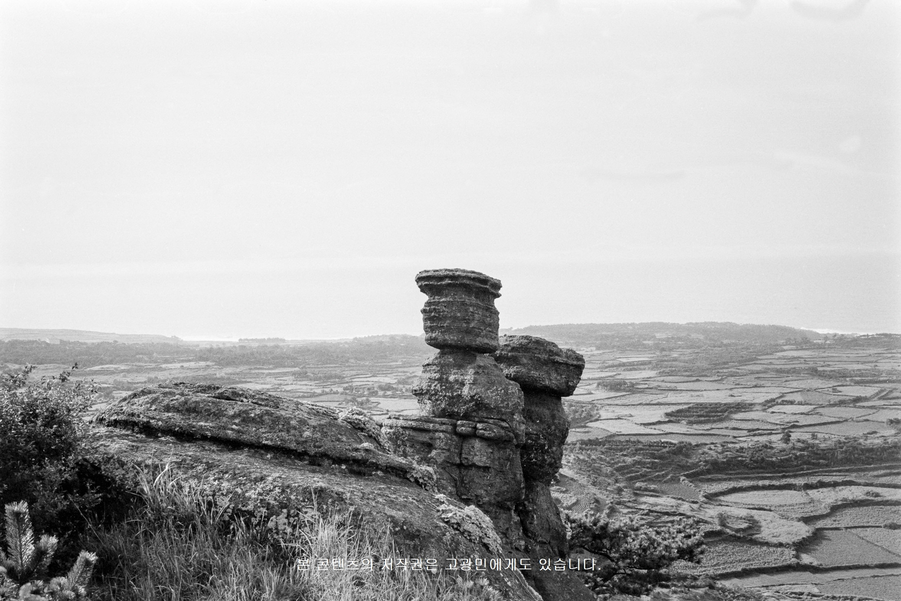
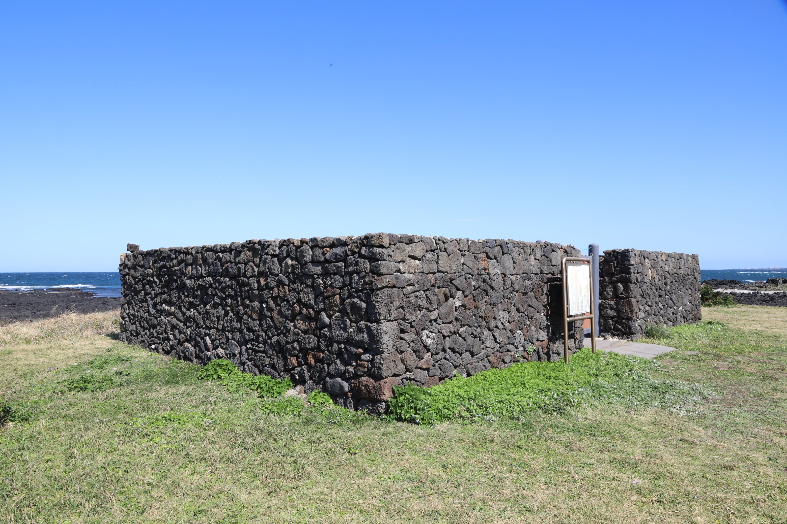

명칭
潛嫂
제주해녀_고내리_2018_양종훈
개관
잠수는 바닷속에 들어가 무호흡으로 전복, 소라 미역 따위를 따는 것을 직업으로 하는 여성을 말한다. 잠수라는 용어는 1940년대 후반부터 써온 것으로 보인다. 강대원의 ≪해녀연구≫(1970)에 따르면, 제헌국회에서 어업법을 바꿀 때 ‘잠수’라는 용어와 함께 그들의 권익이 반영되기를 위해 노력했으나 좌절된 사실을 기록하고 있기 때문이다. 이후 1950년 2월 28일 한국잠수어업수산조합, 1961년 2월 사단법인 한국잠수협회, 1963년 11월 28일 잠수권익옹호회, 1966년 8월 한국수산잠수옹호회 등이 결성되었다. 강대원은 ≪해녀연구≫ <서문>에서, “문헌상에서도 잠수로 호칭되어 있고 현행 수산업법상으로도 잠수로 호칭되어 있으며 어데까지나 생산자이기 때문에 존칭하는 뜻에서 잠수라고 호칭되어져야 되리라고 보아지는 것이다. 해녀라는 호칭은 일본인의 식민지 정책상 이들을 천시해서 해녀라고 호칭했었든 것임에 오늘날에 와서는 이를 시정해서 마땅히 잠수라고 호칭되어져야 될 것이다.”라 기술하고 있다. 그는 ‘잠수’라 명명하게 된 근거의 하나로 제주도 무가인 <칠성본풀이>에 나오는 ‘일곱ᄌᆞᆷ수’인 ‘칠성사신七星蛇神’, ‘칠성부신七星富神’을 들고 있다.
김순자는 ≪제주도방언의 어휘 연구≫(2014)에서, “잠녀의 다른 이름 ‘잠수’는 민간에서 발화되던 ‘ᄌᆞᆷ수’를 한자로 옮긴 것으로 보인다.”는 견해를 밝혔다.
한자 ‘아주머니 수嫂, 형수 수嫂’가 쓰인 ‘잠수’가 국어사전의 표제어로 오른 것은 1991년 금성판 ≪국어대사전≫이 처음이다. 그 후 한글학회(1992)의 ≪우리말큰사전≫, 국립국어원(1999)의 ≪표준국어대사전≫ 그리고 2009년 고려대학교 민족문화연구원의 ≪한국어대사전≫에도 잠수가 표제어로 올랐다. 잠수는 ‘ᄌᆞᆷ수’의 대응 표준어다.
- 000
- 111
- 000
- 111
blockquote
| 1 | 2 | 3 |
| 1 | 2 | 3 |
| 잠수는 바닷속에 들어가 무호흡으로 전복수는 ‘ᄌᆞᆷ수’의 대응 표준어다. | 잠수는 바닷속에 들어가 무호흡으로 전복, 소라 미역 따위를 따는 것을 직업으로 하는 여성을 말한다. 잠수라는 용어는 1940년대 후반부터 써온 것으로 보인다. 강대원의 ≪해녀연구≫(1970)에 따르면, 제헌국회에서 어업법을 바꿀 때 ‘잠수’라는 용어와 함께 그들의 권익이 반영되기를 위해 노력했으나 좌절된 사실을 기록하고 있기 때문이다. 이후 1950년 2월 28일 한국잠수어업수산조합, 1961년 2월 사단법인 한국잠수협회, 1963년 11월 28일 잠수권익옹호회, 1966년 8월 한국수산잠수옹호회 등이 결성되었다. 강대원은 ≪해녀연구≫ <서문>에서, “문헌상에서도 잠수로 호칭되어 있고 현행 수산업법상으로도 잠수로 호칭되어 있으며 어데까지나 생산자이기 때문에 존칭하는 뜻에서 잠수라고 호칭되어져야 되리라고 보아지는 것이다. 해녀라는 호칭은 일본인의 식민지 정책상 이들을 천시해서 해녀라고 호칭했었든 것임에 오늘날에 와서는 이를 시정해서 마땅히 잠수라고 호칭되어져야 될 것이다.”라 기술하고 있다. 그는 ‘잠수’라 명명하게 된 근거의 하나로 제주도 무가인 <칠성본풀이>에 나오는 ‘일곱ᄌᆞᆷ수’인 ‘칠성사신七星蛇神’, ‘칠성부신七星富神’을 들고 있다. 김순자는 ≪제주도방언의 어휘 연구≫(2014)에서, “잠녀의 다른 이름 ‘잠수’는 민간에서 발화되던 ‘ᄌᆞᆷ수’를 한자로 옮긴 것으로 보인다.”는 견해를 밝혔다. 한자 ‘아주머니 수嫂, 형수 수嫂’가 쓰인 ‘잠수’가 국어사전의 표제어로 오른 것은 1991년 금성판 ≪국어대사전≫이 처음이다. 그 후 한글학회(1992)의 ≪우리말큰사전≫, 국립국어원(1999)의 ≪표준국어대사전≫ 그리고 2009년 고려대학교 민족문화연구원의 ≪한국어대사전≫에도 잠수가 표제어로 올랐다. 잠수는 ‘ᄌᆞᆷ수’의 대응 표준어다. |
잠수는 바닷속에 들어가 무호흡으로 전복, 소라 미역 따위를 따는 것을 직업으로 하는 여성을 말한다. 잠수라는 용어는 1940년대 후반부터 써온 것으로 보인다. 강대원의 ≪해녀연구≫(1970)에 따르면, 제헌국회에서 어업법을 바꿀 때 ‘잠수’라는 용어와 함께 그들의 권익이 반영되기를 위해 노력했으나 좌절된 사실을 기록하고 있기 때문이다. 이후 1950년 2월 28일 한국잠수어업수산조합, 1961년 2월 사단법인 한국잠수협회, 1963년 11월 28일 잠수권익옹호회, 1966년 8월 한국수산잠수옹호회 등이 결성되었다. 강대원은 ≪해녀연구≫ <서문>에서, “문헌상에서도 잠수로 호칭되어 있고 현행 수산업법상으로도 잠수로 호칭되어 있으며 어데까지나 생산자이기 때문에 존칭하는 뜻에서 잠수라고 호칭되어져야 되리라고 보아지는 것이다. 해녀라는 호칭은 일본인의 식민지 정책상 이들을 천시해서 해녀라고 호칭했었든 것임에 오늘날에 와서는 이를 시정해서 마땅히 잠수라고 호칭되어져야 될 것이다.”라 기술하고 있다. 그는 ‘잠수’라 명명하게 된 근거의 하나로 제주도 무가인 <칠성본풀이>에 나오는 ‘일곱ᄌᆞᆷ수’인 ‘칠성사신七星蛇神’, ‘칠성부신七星富神’을 들고 있다. 김순자는 ≪제주도방언의 어휘 연구≫(2014)에서, “잠녀의 다른 이름 ‘잠수’는 민간에서 발화되던 ‘ᄌᆞᆷ수’를 한자로 옮긴 것으로 보인다.”는 견해를 밝혔다. 한자 ‘아주머니 수嫂, 형수 수嫂’가 쓰인 ‘잠수’가 국어사전의 표제어로 오른 것은 1991년 금성판 ≪국어대사전≫이 처음이다. 그 후 한글학회(1992)의 ≪우리말큰사전≫, 국립국어원(1999)의 ≪표준국어대사전≫ 그리고 2009년 고려대학교 민족문화연구원의 ≪한국어대사전≫에도 잠수가 표제어로 올랐다. 잠수는 ‘ᄌᆞᆷ수’의 대응 표준어다. |
정의
내용내용
관련 아카이브
-

제주도에서 구하기 쉬운 감으로 감즙을 내어 천연 염색을 하는 것을 ‘감물 염색’ 이라고 하며, 이렇게 만들어진 옷을 ‘갈옷’이라고 합니다.
-

제주도에서 구하기 쉬운 감으로 감즙을 내어 천연 염색을 하는 것을 ‘감물 염색’ 이라고 하며, 이렇게 만들어진 옷을 ‘갈옷’이라고 합니다.
-

제주도에서 구하기 쉬운 감으로 감즙을 내어 천연 염색을 하는 것을 ‘감물 염색’ 이라고 하며, 이렇게 만들어진 옷을 ‘갈옷’이라고 합니다.
-
translate
제주도에서 구하기 쉬운 감으로 감즙을 내어 천연 염색을 하는 것을 ‘감물 염색’ 이라고 하며, 이렇게 만들어진 옷을 ‘갈옷’이라고 합니다.
-
mic
제주도에서 구하기 쉬운 감으로 감즙을 내어 천연 염색을 하는 것을 ‘감물 염색’ 이라고 하며, 이렇게 만들어진 옷을 ‘갈옷’이라고 합니다.
-
image
제주도에서 구하기 쉬운 감으로 감즙을 내어 천연 염색을 하는 것을 ‘감물 염색’ 이라고 하며, 이렇게 만들어진 옷을 ‘갈옷’이라고 합니다.
-
play_circle
제주도에서 구하기 쉬운 감으로 감즙을 내어 천연 염색을 하는 것을 ‘감물 염색’ 이라고 하며, 이렇게 만들어진 옷을 ‘갈옷’이라고 합니다.